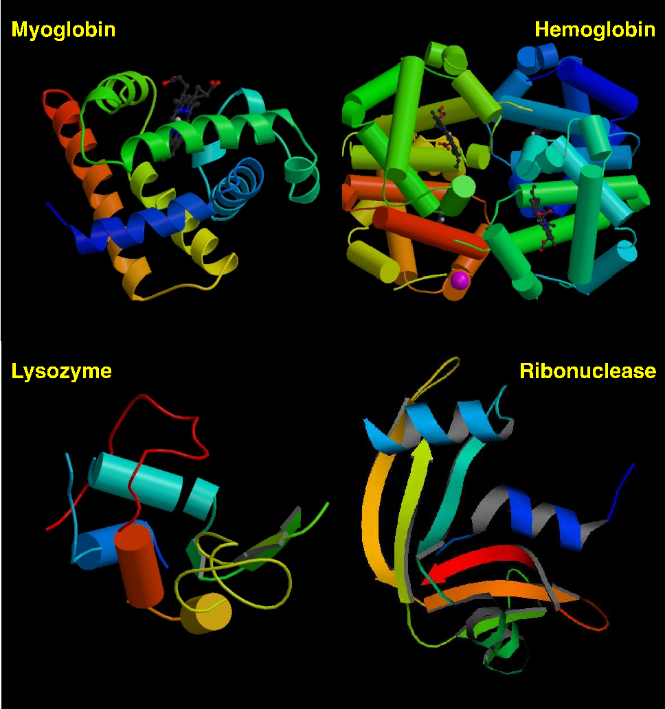
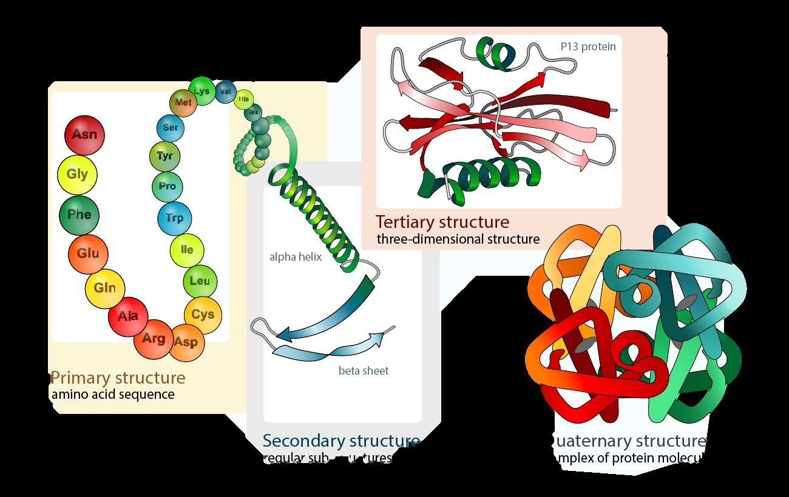
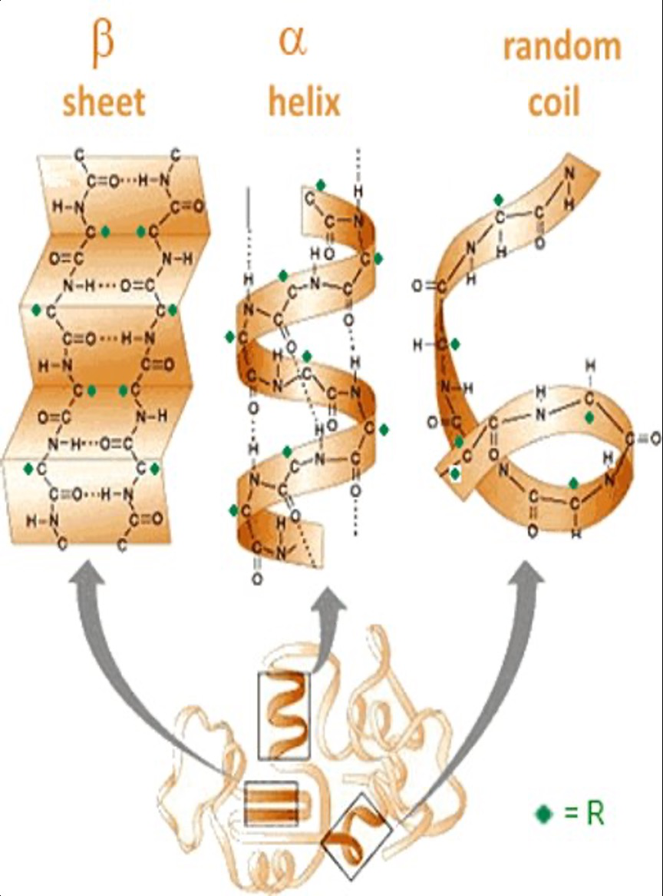
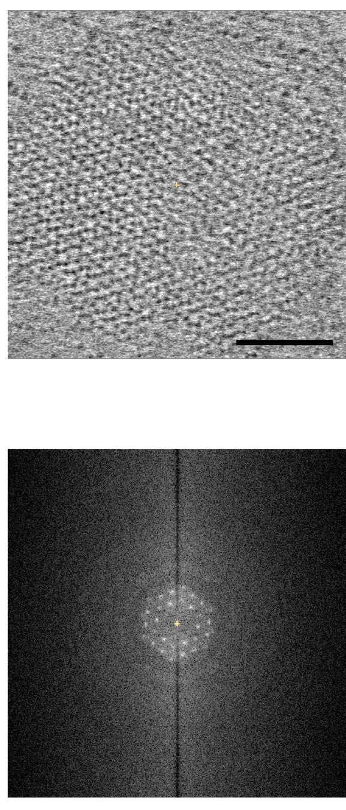
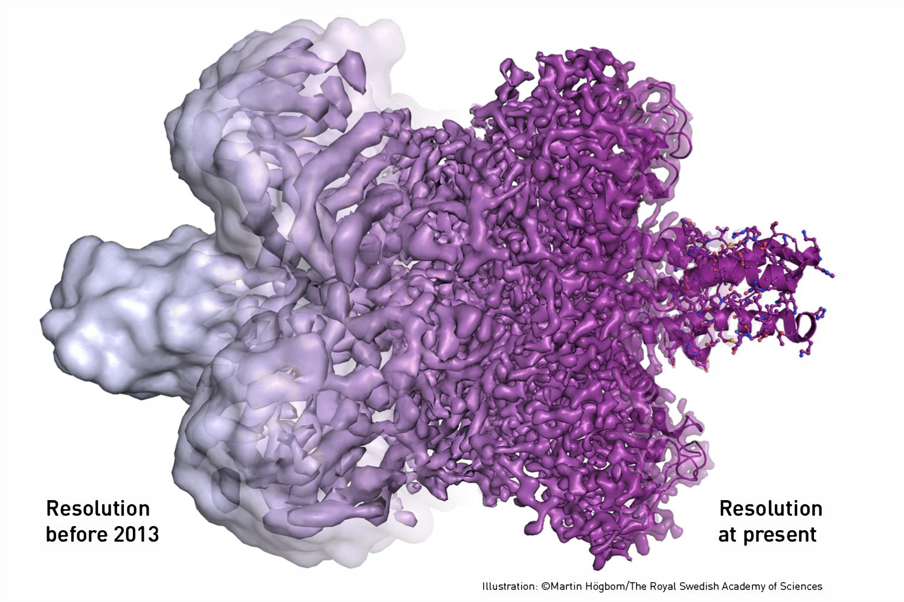

Structural Biology: Physical Principles
In the spring of 1958, John Kendrew and his collaborators at the Cavendish Laboratory published a set of electron density maps that, for the first time in history, showed the three-dimensional arrangement of atoms inside a protein (Kendrew et al. 1958). The protein was myoglobin, an oxygen-storage molecule from sperm whale muscle, and the image Kendrew obtained at 6 Å resolution was bewildering. No neat geometric solid, no orderly lattice of repeating units. The molecule was, in Kendrew’s own words, “far more complicated than had been predicted by any theory of protein structure.” The polypeptide chain wound through space in a path that seemed almost random, and the few regularities visible at that resolution (dense rods of electron density that might be helices) could barely be distinguished from noise.
Two years later, Max Perutz solved the structure of hemoglobin, a protein four times the size of myoglobin, using the same isomorphous replacement method (Perutz et al. 1960). Hemoglobin turned out to contain four subunits, each folded in a pattern strikingly similar to Kendrew’s myoglobin. The resemblance was unexpected. Myoglobin has 153 amino acid residues; the \(\alpha\)- and \(\beta\)-chains of hemoglobin have 141 and 146, respectively. Their sequences share only about 25% identity. Yet the three-dimensional folds are nearly superimposable. This was the first hint of a principle that would dominate the next sixty years of structural biology: protein structure is conserved far more strongly than protein sequence.
When Kendrew pushed his myoglobin analysis to 2 Å resolution, the picture sharpened. The dense rods resolved into \(\alpha\)-helices. Individual amino acid side chains became visible. The helices packed together with their nonpolar side chains buried in the interior, their polar groups facing outward toward the surrounding water. The architecture of the molecule was not random at all. It obeyed physical principles (hydrogen bonding, hydrophobic burial, steric complementarity) that we can state precisely and, in many cases, quantify.
This chapter develops those principles. We begin with the chemical structure of the polypeptide chain and the hierarchy of organization that Kendrew and Perutz revealed. We then examine the physical forces that stabilize folded proteins and confront Levinthal’s paradox, the puzzle of how a protein finds its native state among an astronomically large number of alternatives. The chapter closes with the three experimental methods (X-ray crystallography, NMR spectroscopy, and cryo-electron microscopy) that produce the atomic coordinates on which all of structural bioinformatics depends.

The Polypeptide Chain
A protein is a linear polymer of amino acids joined by peptide bonds. Each amino acid contributes three backbone atoms, nitrogen, \(\alpha\)-carbon (C\(_\alpha\)), and carbonyl carbon (C\('\)), plus a side chain (R group) attached to C\(_\alpha\). The peptide bond itself is formed by a condensation reaction between the amino group of one residue and the carboxyl group of the next, releasing water.
The peptide bond is planar. Linus
Pauling recognized in the 1930s that resonance between the C\('\)=O and C\('\)–N bonds gives the peptide linkage
partial double-bond character.The C\('\)–N bond
length in a peptide is about 1.33 Å, intermediate between a single bond
(1.47 Å) and a double bond (1.25 Å). This partial double-bond character
restricts rotation.
The six atoms of the peptide unit (C\(_\alpha^{(i)}\), C\('\), O, N, H, C\(_\alpha^{(i+1)}\)) lie approximately in a
plane, and the dihedral angle \(\omega\) about the C\('\)–N bond is locked near \(180^\circ\) (trans) for most
residues. The cis configuration (\(\omega \approx 0^\circ\)) occurs
occasionally before proline, where the five-membered pyrrolidine ring
reduces the energy difference between the two isomers.
The backbone conformation of each residue is therefore specified by just two dihedral angles: \(\phi\) (phi), the rotation about the N–C\(_\alpha\) bond, and \(\psi\) (psi), the rotation about the C\(_\alpha\)–C\('\) bond. Together with the fixed \(\omega\), these angles define the path of the backbone through space. We write the sequence of backbone angles for a chain of \(n\) residues as \(\{(\phi_1, \psi_1), (\phi_2, \psi_2), \ldots, (\phi_n, \psi_n)\}\). A protein’s three-dimensional structure is, at the most reductive level, a list of these angle pairs together with the side-chain dihedral angles \(\chi\).
The Ramachandran Plot
In 1963, G. N. Ramachandran, C. Ramakrishnan, and V. Sasisekharan computed which combinations of \(\phi\) and \(\psi\) are sterically permitted for a dipeptide unit (Ramachandran, Ramakrishnan, and Sasisekharan 1963). Their approach was direct: model each atom as a hard sphere with a van der Waals radius, rotate through all combinations of \(\phi\) and \(\psi\) in small increments, and mark each combination as allowed or disallowed based on whether any pair of nonbonded atoms overlaps.
The result is the Ramachandran plot, a two-dimensional map with \(\phi\) on the horizontal axis and \(\psi\) on the vertical, both running from \(-180^\circ\) to \(+180^\circ\). Large regions of this map are sterically forbidden. The allowed regions cluster into a few distinct basins:
The \(\beta\)-region, centered near \((\phi, \psi) \approx (-120^\circ, +130^\circ)\), corresponding to extended backbone conformations found in \(\beta\)-sheets.
The \(\alpha_R\)-region, centered near \((-60^\circ, -45^\circ)\), corresponding to right-handed \(\alpha\)-helices.
The \(\alpha_L\)-region, centered near \((+60^\circ, +45^\circ)\), corresponding to left-handed \(\alpha\)-helices. This region is accessible almost exclusively to glycine, which lacks a side chain and therefore has fewer steric clashes.
Glycine, with only a hydrogen atom as its side chain, has a far larger region of allowed \((\phi, \psi)\) space than any other amino acid. Proline, at the other extreme, is the most restricted: its cyclic side chain fixes \(\phi\) near \(-63^\circ\).
The Ramachandran plot remains one of the most useful diagnostics in
structural biology. When we build or refine a protein model, plotting
all residues’ \((\phi, \psi)\) angles
immediately reveals errors: residues in forbidden regions are almost
certainly misfit. Current structure-validation tools report the
percentage of residues falling in “favored,” “allowed,” and “outlier”
regions of the plot. A well-refined crystal structure typically has more
than 98% of its non-glycine, non-proline residues in favored
regions.Glycine and proline are evaluated against their own
Ramachandran distributions, since their allowed regions differ from
those of the general case.
Structural Hierarchy
Linderstrom-Lang introduced, in 1952, the classification of protein structure into primary, secondary, tertiary, and quaternary levels. This hierarchy remains the standard vocabulary of the field, though we now understand that the boundaries between levels are not always sharp.

Primary Structure
The primary structure of a protein is its amino acid sequence, read from the N-terminus to the C-terminus. Twenty standard amino acids appear in proteins translated by the ribosome, each specified by one or more codons in the genetic code. The sequence determines everything: given the laws of physics and the cellular environment, the sequence of a protein specifies its three-dimensional structure and, therefore, its function. This is the central dogma of structural biology, and it drove the field for decades, first as an article of faith and now as a computational reality with structure prediction methods like AlphaFold.
The primary structure also encodes the geometry of the chain. Bond lengths and angles along the backbone are nearly constant across all residues (C\(_\alpha\)–C\('\) \(\approx\) 1.52 Å, C\('\)–N \(\approx\) 1.33 Å, N–C\(_\alpha\) \(\approx\) 1.47 Å, bond angles near \(110^\circ\)–\(123^\circ\)). The conformational freedom therefore resides almost entirely in the torsion angles \(\phi\), \(\psi\), and the side-chain \(\chi\) angles.
Secondary Structure
Secondary structure refers to local, regular patterns of backbone hydrogen bonding. The two most common elements are the \(\alpha\)-helix and the \(\beta\)-sheet.

The three backbone conformations: \(\beta\)-sheet, \(\alpha\)-helix, and random coil, with hydrogen bonding patterns.
The \(\alpha\)-helix is a right-handed
helical structure in which the backbone NH group of residue \(i\) donates a hydrogen bond to the backbone
C\('\)=O group of residue \(i-4\). This \(i
\to i+4\) hydrogen bonding pattern produces a helix with 3.6
residues per turn and a pitch (rise per complete turn) of 5.4 Å.The rise per residue along the helix axis is \(5.4/3.6 = 1.5\) Å.
The backbone dihedral angles in an ideal \(\alpha\)-helix are \(\phi \approx -57^\circ\) and \(\psi \approx -47^\circ\), placing the
residues squarely in the \(\alpha_R\)-region of the Ramachandran plot.
Side chains project outward from the helix barrel, roughly perpendicular
to the helix axis. A helix of \(n\)
residues has \(n - 4\) hydrogen bonds
along its length; the four NH groups at the N-terminus and the four
C\('\)=O groups at the C-terminus
are unsatisfied, creating a macrodipole with partial positive charge at
the N-terminus and partial negative charge at the C-terminus.
The \(\beta\)-sheet is an extended structure in which hydrogen bonds form between backbone groups on adjacent strands rather than within a single strand. Two arrangements are possible. In an antiparallel \(\beta\)-sheet, adjacent strands run in opposite directions (N\(\to\)C next to C\(\to\)N), and the hydrogen bonds are evenly spaced and roughly perpendicular to the strand direction. In a parallel \(\beta\)-sheet, adjacent strands run in the same direction, and the hydrogen bonds are tilted, creating a slightly less regular pattern. The backbone angles for \(\beta\)-strands fall in the \(\beta\)-region of the Ramachandran plot, near \((\phi, \psi) \approx (-120^\circ, +130^\circ)\) for antiparallel and \((-120^\circ, +115^\circ)\) for parallel sheets. Side chains alternate above and below the plane of the sheet, so that neighboring residues on a strand project in opposite directions.
Turns and loops connect regular secondary structure elements. A \(\beta\)-turn reverses the chain direction over four residues, often stabilized by a hydrogen bond from the C\('\)=O of residue \(i\) to the NH of residue \(i+3\). Loops are longer, irregular segments with no repeating hydrogen bonding pattern. Although loops lack the geometric regularity of helices and sheets, they are not disordered: in most crystal structures, loop residues occupy well-defined positions. Loops frequently form the active sites and binding surfaces of proteins, precisely because their conformational flexibility allows adaptation to ligands and substrates.
Tertiary Structure
Tertiary structure describes the complete three-dimensional arrangement of all atoms in a single polypeptide chain. The packing of secondary structure elements against one another, the burial of hydrophobic side chains in the protein interior, and the formation of disulfide bonds all contribute to tertiary structure.
The hydrophobic core is the defining feature of globular protein architecture. Nonpolar side chains (leucine, isoleucine, valine, phenylalanine, tryptophan) are buried in the interior, away from water. Polar and charged side chains are found predominantly on the surface, where they can interact with solvent. This segregation is not absolute; occasional buried polar groups serve functional roles, as in enzyme active sites and proton channels. But the statistical pattern is overwhelming. Kendrew saw it in myoglobin; it holds across the entire Protein Data Bank.
Many proteins are organized into domains, independently folding units of 50–300 residues connected by short linker segments. A domain has its own hydrophobic core and its own complement of secondary structure. Multi-domain proteins can combine different biochemical functions within a single polypeptide chain by arranging domains in series.
Quaternary Structure
Quaternary structure refers to the assembly of multiple polypeptide chains (subunits) into a functional complex. Hemoglobin is the classic example: two \(\alpha\)-subunits and two \(\beta\)-subunits associate into an \(\alpha_2\beta_2\) tetramer. The subunit interfaces are stabilized by the same forces that stabilize tertiary structure (hydrophobic contacts, hydrogen bonds, salt bridges) but now acting between chains rather than within a single chain.
Many oligomeric proteins display symmetry. A homodimer has a twofold rotation axis (\(C_2\) symmetry). Homotrimers, homotetramers, and higher-order assemblies are common, with cyclic (\(C_n\)) and dihedral (\(D_n\)) point group symmetries appearing regularly in the PDB. Viral capsids take symmetry to an extreme: many icosahedral capsids are built from 60 copies of a single protein subunit (or multiples thereof), arranged with the 532 (\(I\)) point group symmetry of the icosahedron.
Quaternary assembly is often essential for function. Hemoglobin’s
cooperative oxygen binding arises from conformational coupling between
subunits: the binding of O\(_2\) to one
subunit shifts the equilibrium of adjacent subunits toward the
high-affinity R state. This allosteric mechanism would be impossible in
a monomer.Myoglobin is a monomer and shows a simple hyperbolic
oxygen-binding curve. Hemoglobin’s sigmoidal curve is a direct
consequence of its quaternary structure.
Forces That Stabilize Protein Structure
A folded protein is only marginally stable. The free energy difference between the folded and unfolded states of a typical small globular protein is \(\Delta G_{\text{fold}} \approx -20\) to \(-60\) kJ/mol, equivalent to the strength of a few hydrogen bonds. This marginal stability arises because folding involves a near-cancellation of large opposing terms: the favorable burial of hydrophobic surface and formation of intramolecular interactions on one side, the unfavorable loss of conformational entropy on the other.
Hydrogen Bonds
A hydrogen bond forms when a hydrogen atom covalently bonded to an electronegative donor atom (N or O) interacts with a nearby electronegative acceptor atom. In proteins, the most important hydrogen bonds are those between backbone amide NH groups (donors) and backbone carbonyl C\('\)=O groups (acceptors). Side-chain hydroxyl (Ser, Thr, Tyr), amide (Asn, Gln), carboxyl (Asp, Glu), and imidazole (His) groups also participate.
The geometry of an optimal hydrogen bond has the donor, hydrogen, and
acceptor nearly collinear, with a donor–acceptor distance of 2.8–3.2 Å
and a D–H\(\cdots\)A angle greater than
\(120^\circ\). The strength ranges from
about 2 to 10 kJ/mol, depending on the geometry and the dielectric
environment.Hydrogen bonds in the low-dielectric interior of a
protein can be substantially stronger than those exposed to water,
because water competes effectively as both donor and acceptor.
On its own, each hydrogen bond is weak compared to a
covalent bond (\(\sim\)350 kJ/mol).
Their importance comes from their number: a typical folded protein has
hundreds of backbone hydrogen bonds, and the secondary structure
patterns described above are nothing more than the systematic
satisfaction of backbone hydrogen bonding potential.
The Hydrophobic Effect
The hydrophobic effect is the dominant driving force for protein folding. When a nonpolar solute is transferred from a nonpolar environment into water, the free energy change is positive (unfavorable), even though the enthalpy change can be slightly negative (favorable, due to van der Waals contacts with water molecules). The explanation lies in entropy.
Water molecules adjacent to a nonpolar surface cannot form their full complement of hydrogen bonds in every direction. They compensate by adopting more ordered arrangements, reducing the number of accessible microstates. The resulting entropy penalty drives the thermodynamics of the process. We can write the free energy of transfer as \[\Delta G = \Delta H - T\Delta S, \label{eq:hydrophobic}\] where \(\Delta H\) is small and \(\Delta S < 0\) (entropy decreases upon ordering of water). At room temperature, the \(-T\Delta S\) term dominates, making \(\Delta G > 0\). Burying nonpolar groups in the protein interior removes them from contact with water, releasing the ordered water molecules and producing a favorable (negative) contribution to the folding free energy.
The magnitude of the hydrophobic effect is roughly proportional to
the nonpolar surface area buried upon folding, with an empirical
coefficient of about 25 cal/(mol\(\cdot\)Å\(^2\)), or approximately 105 J/(mol\(\cdot\)Å\(^2\)).This estimate comes from partitioning experiments that
measure the transfer free energy of model compounds from water to
organic solvents.
For a small globular protein burying
5,000–10,000 Å\(^2\) of nonpolar surface, the hydrophobic
contribution alone amounts to hundreds of kilojoules per mole, far
larger than the net stability of the folded state. The difference is
consumed by the conformational entropy cost of folding, which is of
comparable magnitude.
Van der Waals Interactions
Van der Waals interactions arise from transient fluctuations in electron distributions. A momentary dipole in one atom induces a complementary dipole in a neighboring atom, producing a net attractive force. These induced dipole–dipole (London dispersion) forces are individually weak and short-ranged, but their cumulative effect in a tightly packed protein interior is substantial.
The standard model for van der Waals interactions is the
Lennard-Jones potential: \[V(r) =
4\epsilon\left[\left(\frac{\sigma}{r}\right)^{12} -
\left(\frac{\sigma}{r}\right)^{6}\right],
\label{eq:lennard-jones}\] where \(r\) is the interatomic distance, \(\epsilon\) is the depth of the potential
well (setting the energy scale), and \(\sigma\) is the distance at which the
potential crosses zero. The \(r^{-6}\)
term captures the London dispersion attraction. The \(r^{-12}\) term is a computationally
convenient approximation to the short-range Pauli repulsion that arises
when electron clouds overlap. The equilibrium separation, where
attraction and repulsion balance, occurs at \(r_{\min} = 2^{1/6}\sigma \approx
1.12\,\sigma\).The exponent 12 in the repulsive term has no deep
physical justification; it is simply the square of 6, which makes
computation faster. More accurate repulsive potentials use exponential
forms (the Buckingham potential), but the Lennard-Jones \(12\)-\(6\)
form is standard in biomolecular force fields.
The packing density in protein interiors rivals that of organic crystals. X-ray structures show that the average packing fraction of atoms in the core is about 0.75, compared to 0.74 for close-packed spheres. This tight packing maximizes van der Waals contacts and contributes on the order of 40–80 kJ/mol to the stability of a small protein.
Electrostatic Interactions
Charged amino acid side chains, including Asp, Glu (negative at physiological pH), Lys, and Arg (positive), can form salt bridges, ion pairs in which oppositely charged groups are in direct contact or bridged by a single water molecule. A salt bridge on the protein surface contributes relatively little to stability, because the charged groups interact favorably with water in the unfolded state as well. Buried salt bridges can be stabilizing, but they are rare, because burying an unpaired charge carries a large desolvation penalty.
The helix dipole is a subtler
electrostatic effect. The alignment of peptide bond dipoles along an
\(\alpha\)-helix creates a macroscopic
dipole moment, with about half a unit of positive charge at the
N-terminus and half a unit of negative charge at the C-terminus.Each peptide bond contributes a dipole of about
3.5 Debye. In an \(\alpha\)-helix,
these dipoles are roughly parallel to the helix axis, so their
components along the axis add constructively.
Negatively charged groups (phosphate, aspartate) are
frequently found near helix N-termini, and positively charged groups
near C-termini, an observation consistent with favorable electrostatic
complementarity.
Levinthal’s Paradox and the Folding Funnel
In 1969, Cyrus Levinthal posed a thought experiment that crystallized
the protein folding problem. Consider a protein of 100 residues. If each
backbone bond can adopt just three conformations, the total number of
possible backbone configurations is \(3^{198}
\approx 10^{94}\).The factor of 198 arises because there are two backbone
torsion angles (\(\phi\), \(\psi\)) per residue, giving \(100 \times 2 = 200\) angles, minus two for
the terminal residues. The exact accounting varies by convention, but
the conclusion is the same.
Even if the protein could sample conformations at a rate
of \(10^{13}\) per second (a generous
estimate based on bond vibration frequencies), it would require \(10^{94}/10^{13} = 10^{81}\) seconds to
explore all possibilities. The age of the universe is about \(4 \times 10^{17}\) seconds. A random search
is out of the question.
Yet proteins fold. Small proteins fold in microseconds to milliseconds; even large proteins typically reach their native state in seconds to minutes. The resolution to Levinthal’s paradox is that folding is not a random search. Proteins fold along pathways that progressively decrease the free energy, guided by the same forces we have just described.
The energy landscape picture,
developed by Dill, Chan, Wolynes, Onuchic, and others in the 1990s,
reframes folding as diffusion on a high-dimensional free energy
surface.See Dill and Chan, “From Levinthal to pathways to
funnels,” Nature Structural Biology 4, 10–19
(1997). The funnel picture draws on ideas from the statistical mechanics
of disordered systems.
For a foldable protein, this surface has the shape of a
funnel: many high-energy unfolded states at the rim, a single (or few)
low-energy native state(s) at the bottom, and a general downhill bias
throughout. Local traps and kinetic barriers may slow the process and
produce folding intermediates, but the overall funnel shape ensures that
the native state is kinetically accessible.
We can write the free energy of a conformation as \[G(\text{conformation}) = H(\text{conformation}) - TS(\text{conformation}), \label{eq:folding-free-energy}\] where the enthalpy \(H\) accounts for all intramolecular interactions and protein–solvent interactions, and \(S\) includes both conformational entropy of the chain and the entropy of the surrounding solvent (especially the water molecules released from hydrophobic surfaces upon folding). The native state sits at the global minimum of \(G\) under physiological conditions. This is the thermodynamic hypothesis, first articulated by Christian Anfinsen on the basis of his refolding experiments with ribonuclease A.
The funnel picture does not require a single folding pathway. Different molecules in an ensemble may descend the funnel by different routes, and the concept of “the” folding pathway is in many cases an oversimplification. What matters is that the landscape is globally funneled, so that the vast majority of starting configurations are connected to the native state by downhill (or at most mildly uphill) paths.
Experimental Methods of Structure Determination
Structural bioinformatics depends on experimental structures. The Protein Data Bank (PDB) contains more than 200,000 experimentally determined structures, and virtually every computational method in this book, from homology modeling to machine learning, is trained on, validated against, or benchmarked using these data. Three experimental techniques account for the vast majority of deposited structures: X-ray crystallography, nuclear magnetic resonance (NMR) spectroscopy, and cryo-electron microscopy (cryo-EM).
X-ray Crystallography
X-ray crystallography has produced more protein structures than all other methods combined. The method requires a protein crystal: a regular three-dimensional array in which copies of the protein are arranged on a lattice with translational symmetry. When a beam of X-rays (wavelength \(\lambda \approx 1\) Å, comparable to interatomic distances) strikes the crystal, the electrons in the protein scatter the X-rays, and constructive interference produces a diffraction pattern of discrete spots on a detector.

Electron micrograph of a 2D protein crystal (top) and its diffraction pattern (bottom).
Bragg’s law describes the condition for constructive interference. Consider a set of parallel lattice planes with spacing \(d\). X-rays incident at angle \(\theta\) to the planes will interfere constructively when \[n\lambda = 2d\sin\theta, \label{eq:bragg}\] where \(n\) is a positive integer. Each diffraction spot corresponds to a particular set of lattice planes, indexed by Miller indices \((h, k, l)\).
The quantity measured at each spot is the intensity \(I(h,k,l)\), which is proportional to the squared magnitude of the structure factor: \[I(h,k,l) \propto |F(h,k,l)|^2. \label{eq:intensity}\] The structure factor \(F(h,k,l)\) is a complex number. Its magnitude \(|F|\) is obtained from the measured intensity, but its phase \(\varphi(h,k,l)\) is lost in the measurement. This is the phase problem, the central difficulty of X-ray crystallography.
If we knew both the magnitudes and phases of all structure factors, we could compute the electron density at every point in the unit cell by an inverse Fourier transform: \[\rho(x,y,z) = \frac{1}{V}\sum_{h,k,l} F(h,k,l)\,\exp\!\bigl[-2\pi i(hx + ky + lz)\bigr], \label{eq:electron-density}\] where \(V\) is the unit cell volume and the sum runs over all observed reflections. The electron density \(\rho\) is a real-valued function of position, and the atomic model is built by fitting atoms into its peaks.
Solving the phase problem is the art of crystallography. Several methods exist. The Patterson function, defined as the Fourier transform of the intensities (not the structure factors), yields a map of interatomic vectors. For proteins containing a small number of heavy atoms (mercury, platinum, selenium), the Patterson map can reveal the heavy-atom positions, from which initial phases are calculated. This is the basis of isomorphous replacement, the method Perutz and Kendrew used.
Molecular replacement takes a different approach: if a homologous protein of known structure exists, it can be placed in the unit cell and used to calculate initial phases. This method now accounts for the majority of new crystal structures, because the PDB is large enough that most newly crystallized proteins have a relative of known structure.
Multi-wavelength anomalous diffraction (MAD) and single-wavelength
anomalous diffraction (SAD) exploit the anomalous scattering of selenium
atoms incorporated into the protein by growing cells in
selenomethionine-containing media.Anomalous scattering breaks Friedel’s law, \(F(h,k,l) = F^*(-h,-k,-l)\), and the
resulting differences between Friedel pairs provide phase information.
SAD phasing with selenomethionine has become the standard method for
de novo structure determination.
The wavelength-dependent phase shifts introduced by the
selenium atoms provide enough information to determine phases without
heavy-atom derivatives.
Resolution and model quality. The resolution of a crystal structure, stated in Ångstroms, describes the minimum spacing of lattice planes contributing to the diffraction pattern. At 3.5 Å resolution, the overall shape and secondary structure are visible, but individual side chains cannot be placed confidently. At 2.0 Å, most side chains are clearly resolved. At 1.0 Å or better, individual atoms are resolved and hydrogen atoms may become visible.
The agreement between the atomic model and the observed data is
quantified by the \(R\)-factor: \[R = \frac{\sum_{h,k,l} \bigl|\, |F_{\text{obs}}|
- |F_{\text{calc}}| \,\bigr|}
{\sum_{h,k,l} |F_{\text{obs}}|},
\label{eq:rfactor-xray-intro}\] where \(F_{\text{obs}}\) and \(F_{\text{calc}}\) are the observed and
calculated structure factor amplitudes. A well-refined protein structure
has \(R \approx 0.15\)–\(0.20\). The free \(R\)-factor (\(R_{\text{free}}\)), calculated from a
random subset of reflections excluded from refinement, guards against
overfitting; a gap larger than about 0.05 between \(R\) and \(R_{\text{free}}\) suggests problems with
the model.The concept of \(R_{\text{free}}\) was introduced by Axel
Brünger in 1992. It is the crystallographic analog of cross-validation
in machine learning.
NMR Spectroscopy
Nuclear magnetic resonance spectroscopy determines protein structures in solution, avoiding the need for crystals. The method exploits the magnetic properties of atomic nuclei with nonzero spin, principally \(^1\)H, \(^{13}\)C, and \(^{15}\)N in protein applications. In a strong magnetic field, these nuclei absorb radiofrequency radiation at frequencies that depend on their chemical environment.
The chemical shift of a nucleus, defined as the difference between its resonance frequency and that of a reference compound and measured in parts per million (ppm), reflects the local electronic environment. A backbone amide \(^1\)H in an \(\alpha\)-helix resonates at a different frequency than one in a \(\beta\)-strand, because the secondary structure alters the local magnetic shielding. Chemical shift assignments, matching each peak in the spectrum to a specific atom in the protein, are the first step in NMR structure determination.
Distance restraints come from the nuclear Overhauser effect (NOE). When two hydrogen atoms are close in space (less than about 5 Å apart), magnetization can transfer between them through dipolar coupling. The intensity of the NOE signal falls off as \(r^{-6}\), where \(r\) is the internuclear distance, providing a powerful although imprecise distance ruler. A typical NMR structure determination for a small protein collects several thousand NOE-derived distance restraints.
Dihedral angle restraints come from scalar (\(J\)) coupling constants. The three-bond coupling constant \(^3J_{\text{HN-H}\alpha}\) is related to the backbone angle \(\phi\) by the Karplus equation: \[^3J(\phi) = A\cos^2\phi + B\cos\phi + C, \label{eq:karplus}\] where \(A\), \(B\), and \(C\) are empirically determined parameters (approximately 6.51, \(-1.76\), and 1.60 Hz for backbone \(^3J_{\text{HN-H}\alpha}\)). Measured \(J\)-couplings thus constrain the backbone conformation.
Structure determination from NMR data is a constraint satisfaction problem. Given a set of distance restraints (from NOEs), dihedral angle restraints (from \(J\)-couplings and chemical shifts), and hydrogen bond restraints (from hydrogen-deuterium exchange experiments), we seek a three-dimensional structure that satisfies all constraints simultaneously. The standard approach uses simulated annealing or distance geometry: generate many random starting structures, then energy-minimize each one under the restraint forces plus a physical force field, retaining only those structures that satisfy all experimental constraints.
The result is an ensemble of 10–30 structures, all consistent with
the data, rather than a single model. The spread within the ensemble
reflects the precision of the experimental data. Well-determined regions
(with many NOE contacts) converge tightly; poorly determined regions
(flexible loops, chain termini) show large variation. The backbone
root-mean-square deviation (RMSD) within a good NMR ensemble is
typically 0.3–0.8 Å for well-ordered regions.Whether this ensemble represents genuine conformational
heterogeneity or simply the limits of the data is a question that
continues to generate discussion. In practice, both contributions are
present, and separating them requires additional experiments.
Cryo-Electron Microscopy
Cryo-electron microscopy images individual macromolecular complexes embedded in a thin layer of vitreous (amorphous) ice. The method does not require crystals and can handle assemblies too large or too heterogeneous for crystallography. Since about 2013, advances in direct electron detectors and computational image processing have pushed cryo-EM resolution into the range of 2–4 Å for favorable specimens, earning the method a share of the 2017 Nobel Prize in Chemistry.

The physics of image formation in the electron microscope is governed by the contrast transfer function (CTF). An ideal thin specimen acts as a weak phase object: it shifts the phase of the transmitted electron wave without significantly attenuating its amplitude. The CTF describes how the microscope’s optics (defocus, spherical aberration) convert these phase shifts into intensity variations on the detector. The CTF oscillates as a function of spatial frequency, alternately transferring and reversing contrast: \[\text{CTF}(s) = -\sin\!\Bigl[\pi\lambda\Bigl(\Delta z\, s^2 - \tfrac{1}{2}C_s\lambda^2 s^4\Bigr)\Bigr], \label{eq:ctf}\] where \(s\) is the spatial frequency (reciprocal of resolution), \(\lambda\) is the electron wavelength (about 0.02 Å at 300 kV), \(\Delta z\) is the defocus, and \(C_s\) is the spherical aberration coefficient. Accurate estimation and correction of the CTF is essential for high-resolution reconstruction.
Single-particle analysis is the dominant approach for structure determination by cryo-EM. A micrograph contains images of thousands of individual protein molecules (“particles”), each in a random orientation. The computational task is to determine the three-dimensional structure from these noisy two-dimensional projection images.
The workflow has several stages. First, individual particles are
identified and extracted from micrographs. Second, particles are
classified into groups representing similar views (2D class averages),
which improves the signal-to-noise ratio. Third, the relative
orientations of the class averages are determined (either by
common-lines methods or by iterative projection matching) and a
three-dimensional density map is computed by back-projection.The mathematical basis is the projection-slice theorem
(also known as the Fourier slice theorem): the two-dimensional Fourier
transform of a projection image equals a central slice through the
three-dimensional Fourier transform of the object. Combining many
projections at different orientations fills in the three-dimensional
Fourier space.
Fourth, the map is iteratively refined against the raw
particle images.
The resolution of a cryo-EM map is assessed by the Fourier shell
correlation (FSC), which measures the normalized cross-correlation
between two independent reconstructions (each computed from half the
data) as a function of spatial frequency: \[\text{FSC}(s) = \frac{\sum_{s_i \in \text{shell}}
F_1(s_i)\, F_2^*(s_i)}
{\sqrt{\sum_{s_i} |F_1(s_i)|^2 \;\sum_{s_i}
|F_2(s_i)|^2}},
\label{eq:fsc}\] where \(F_1\)
and \(F_2\) are the Fourier transforms
of the two half-maps and the sums run over all voxels in a thin
spherical shell at spatial frequency \(s\). The resolution is reported as the
spatial frequency at which the FSC drops to 0.143, a threshold derived
from the signal-to-noise ratio needed for reliable phase
information.The FSC = 0.143 criterion, proposed by Rosenthal and
Henderson (2003), corresponds to the spatial frequency at which the
signal is half the noise in a single reconstruction. Other thresholds
(0.5, 0.3) are occasionally used; the choice of threshold can shift the
reported resolution by 0.5–1.0 Å.
The resolution revolution in cryo-EM was driven primarily by hardware. Direct electron detectors, which register individual electrons rather than converting them to photons first, dramatically improved the detective quantum efficiency (DQE). Equally important was the development of movie-mode data collection: instead of recording a single exposure, the detector captures a rapid series of frames. Individual frames can be aligned to correct for beam-induced specimen motion, reducing blurring and improving the effective resolution. These advances, combined with faster computers and better algorithms for particle alignment, have made cryo-EM competitive with crystallography for many targets and superior for large, flexible, or heterogeneous complexes.
Chapter Notes
The history of protein crystallography is told vividly in Judson’s The Eighth Day of Creation (1979) and in Perutz’s own essays collected in I Wish I’d Made You Angry Earlier (1998). Kendrew’s 6 Å myoglobin map appeared as Kendrew et al., “A three-dimensional model of the myoglobin molecule obtained by X-ray analysis,” Nature 181, 662–666 (1958); the 2 Å refinement followed in Kendrew et al., Nature 185, 422–427 (1960). Perutz’s hemoglobin structure at 5.5 Å was reported in Perutz et al., Nature 185, 416–422 (1960).
The Ramachandran plot first appeared in Ramachandran, Ramakrishnan, and Sasisekharan, “Stereochemistry of polypeptide chain configurations,” J. Mol. Biol. 7, 95–99 (1963). Modern Ramachandran analysis uses data-derived boundaries; the standard reference is Lovell et al., Proteins 50, 437–450 (2003).
For the thermodynamics of protein folding, Dill’s review “Dominant forces in protein folding,” Biochemistry 29, 7133–7155 (1990), remains an excellent starting point. Kauzmann’s 1959 paper in Advances in Protein Chemistry introduced the hydrophobic effect as the primary driving force. The funnel picture of folding landscapes is developed in Dill and Chan, Nature Struct. Biol. 4, 10–19 (1997), and in Bryngelson et al., Proteins 21, 167–195 (1995). Anfinsen’s thermodynamic hypothesis is stated in Anfinsen, “Principles that govern the folding of protein chains,” Science 181, 223–230 (1973).
The theory and practice of macromolecular crystallography are covered in depth by Drenth, Principles of Protein X-ray Crystallography (3rd ed., Springer, 2007), and by Rupp, Biomolecular Crystallography (Garland Science, 2010). Brünger’s introduction of \(R_{\text{free}}\) appeared in Nature 355, 472–475 (1992).
For biomolecular NMR, Wüthrich’s NMR of Proteins and Nucleic Acids (Wiley, 1986) established the field; Cavanagh et al., Protein NMR Spectroscopy (2nd ed., Academic Press, 2007) is the standard modern textbook. The Karplus equation was first derived in Karplus, “Contact electron-spin coupling of nuclear magnetic moments,” J. Chem. Phys. 30, 11–15 (1959).
The cryo-EM resolution revolution is reviewed in Kühlbrandt, “The resolution revolution,” Science 343, 1443–1444 (2014), and in Nogales, “The development of cryo-EM into a mainstream structural biology technique,” Nature Methods 13, 24–27 (2016). The FSC = 0.143 criterion comes from Rosenthal and Henderson, J. Mol. Biol. 333, 721–745 (2003). For the physics of electron image formation and the CTF, see Frank, Three-Dimensional Electron Microscopy of Macromolecular Assemblies (Oxford University Press, 2006).